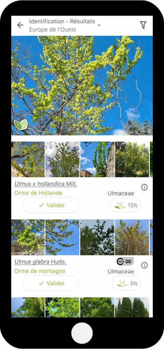

{{
}}
The \(plantgame^2\) : sciences participatives pour identifier les plantes
Joseph Salmon
IMAG, Univ Montpellier, CNRS, Inria, Montpellier, France

Consortium Pl@ntnet
Apprentissage automatique & sciences participatives
Une plateforme de science citoyenne utilisant l’apprentissage automatique pour aider les gens à identifier les plantes avec leur téléphone
Site web: https://plantnet.org/

- Naissance: Montpellier, 2011
- Note: pas de champignons, désolé!
